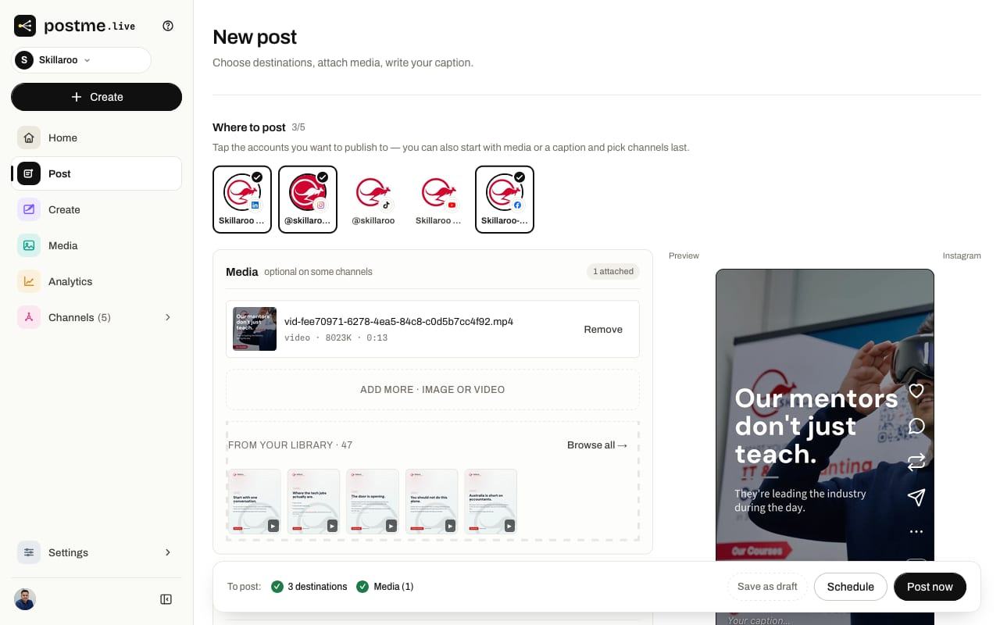
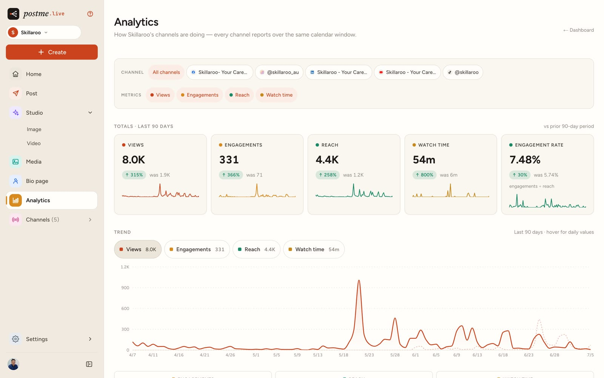
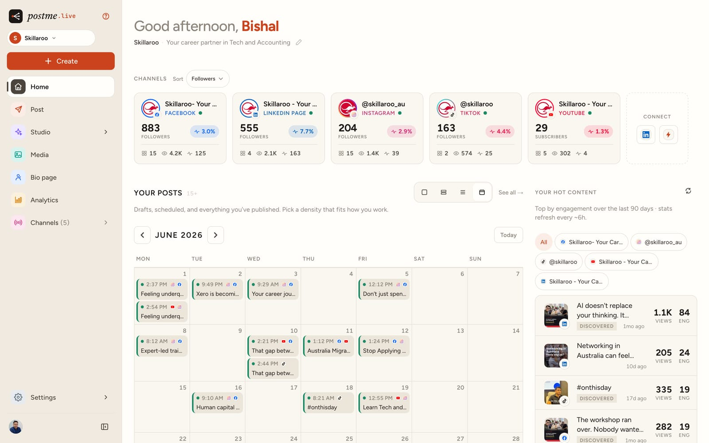
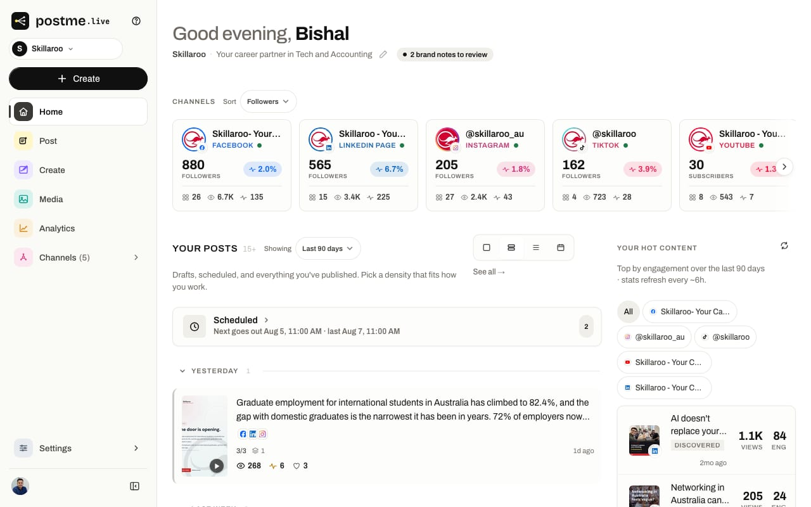
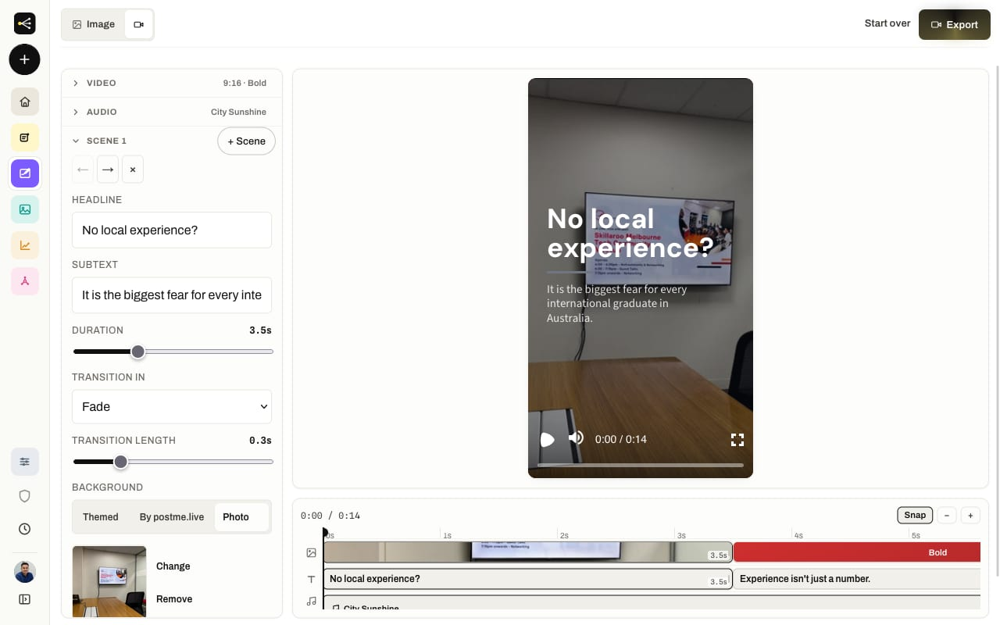
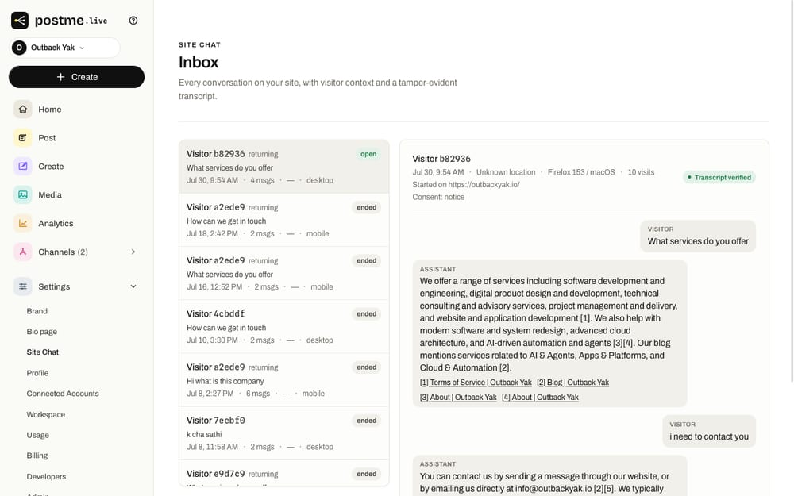
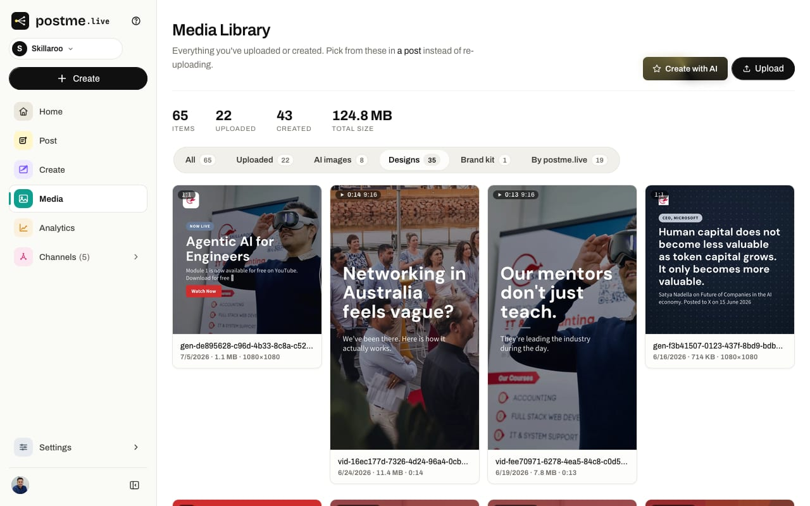
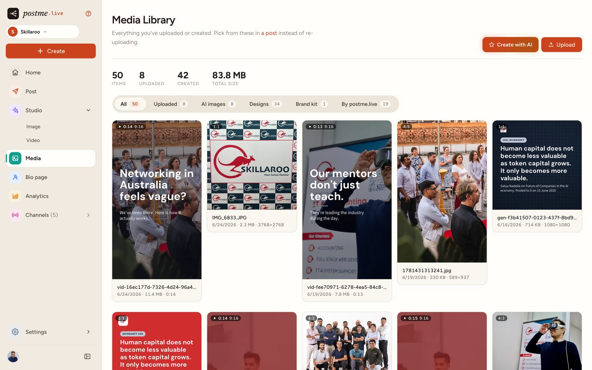
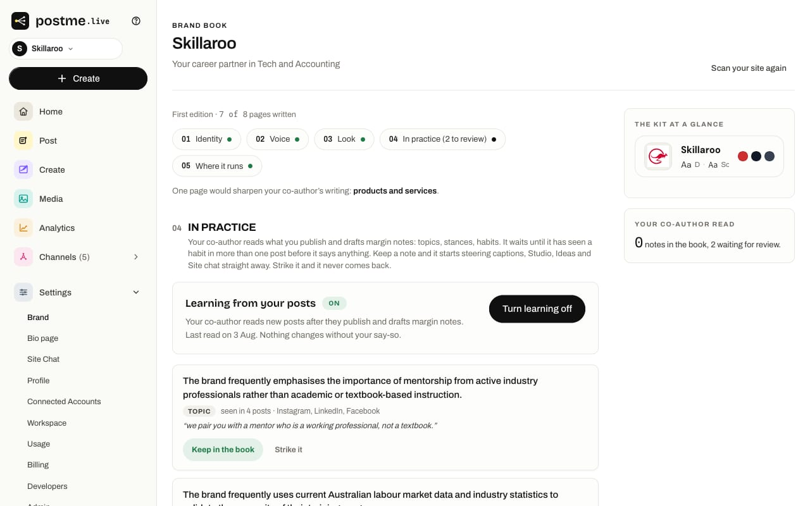
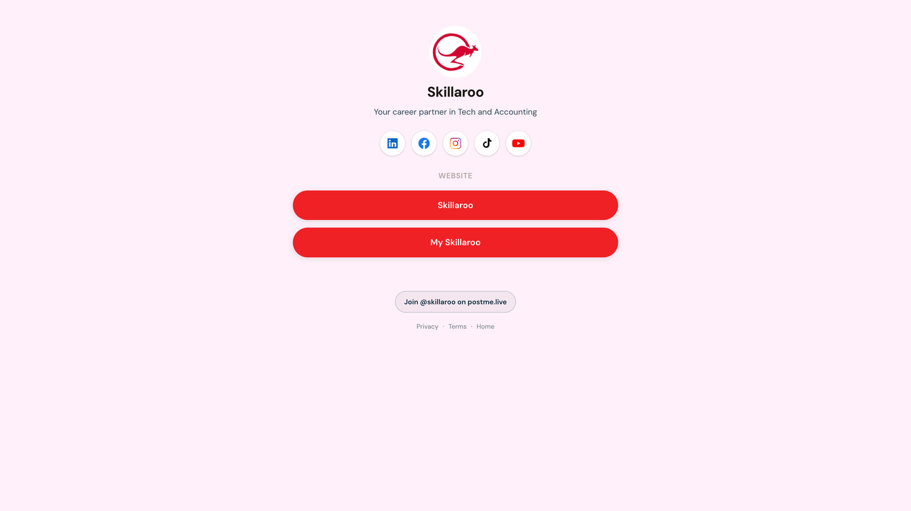

Case study · postme.live
Six surfaces, one product.
A social publishing platform for small brands. Write the post once; every channel gets its own version, in your voice.
- Client
- Outback Yak, Melbourne
- Year
- 2026
- Role
- Product design, UI/UX
- Status
- Live · public preview
The problem
The person using this is not a marketing team. They are a roaster, a studio owner, a coach — posting between other jobs, usually on a phone.
They will not read documentation. And publishing is irreversible in the way saving a draft is not.
Four different jobs had to feel like one product you could learn in an afternoon.
The surfaces






One kit, every surface
The brand kit is not a folder of assets. It re-colours the product itself, so two customers see the same interface wearing their own brand — with no forked stylesheet behind it.




What holds it together
- 01
One navigation spine
The same rail, in the same order, on every surface.
- 02
One card, many contents
Difference carried by content, never by chrome.
- 03
Preview beside edit
Never after it.
- 04
States designed, not discovered
Empty, loading, partial, failed — specified everywhere.